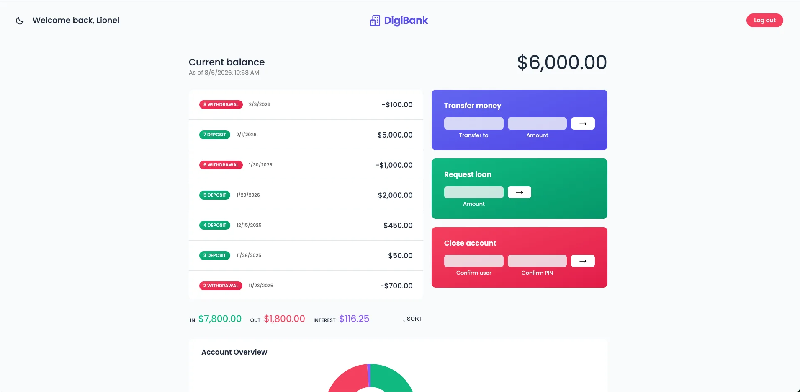
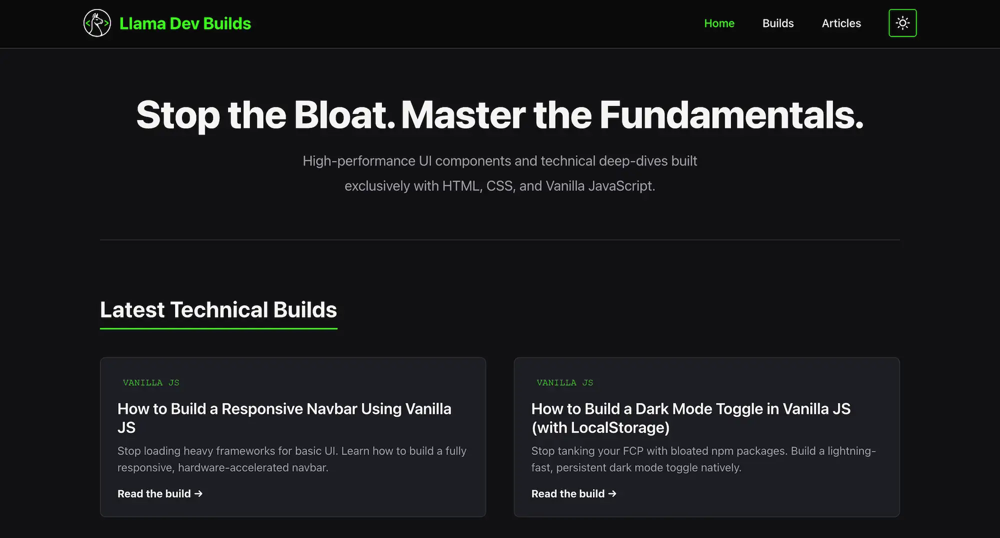
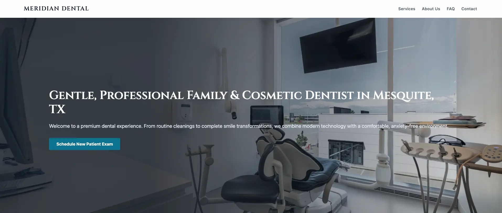

All Projects
Earlier projects, built before I moved to React and TypeScript.

Llama Dev Builds
A responsive technical blog built with HTML, CSS and vanilla JavaScript, deployed on Netlify from GitHub. Includes a mobile-first navbar and custom vector graphics for the storefront.

Meridian Dental Case Study
A dental practice website built for speed and accessibility, with semantic HTML, JSON-LD structured data, a 98+ Lighthouse score and LCP under 1.5 seconds.